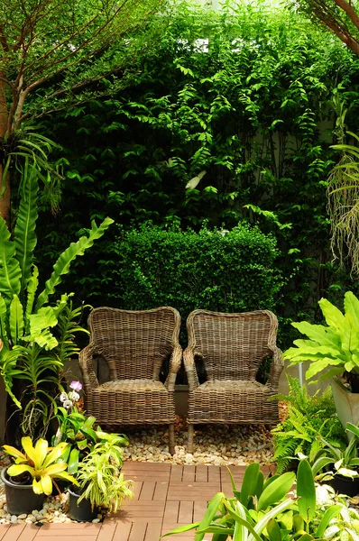

Take your graphics protection to the next level with DOL Max overlaminates
Pair with MPI 1105 wrapping film for ramped up protection
Maximum DurabilityEnhanced AppearanceHigh Gloss Finish
DOL Max Overlaminate Films
Printed graphics deserve maximum protection, DOL Max is the solution.
Features & Benefits:
Premium vertical durability of up to 7 years and up to 2 years horizontal durability protection.
The high gloss finish enhances the appearance of graphics and adds a special touch to help your graphics stand out.
Our digital overlaminates can be used on a variety of substrates, including banners, vehicle graphics, outdoor signage, and more.
why us?

Quality Products
Our digital overlaminate films are made from the highest quality materials and are designed to provide superior protection and appearance to your digital prints.
Multiple Options
We offer DOL Max in a 2.1 mil gloss finish and 1.3 mil optically clear, gloss finish. This allows you to choose the perfect film thickness level for your specific application, ensuring your graphics look the best and stand out from the competition.
Expertise and Support
Our team of experts are available to provide guidance and support throughout the entire process, from selecting the right product for your needs to installation and beyond.
Durability Assurance
Trust our products with confidence, as we offer industry leading durability assurance for our overlaminate films.